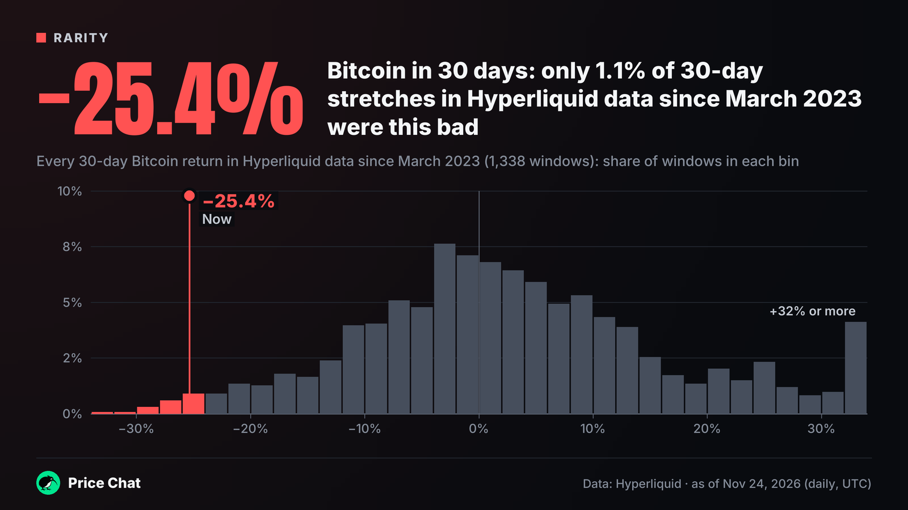
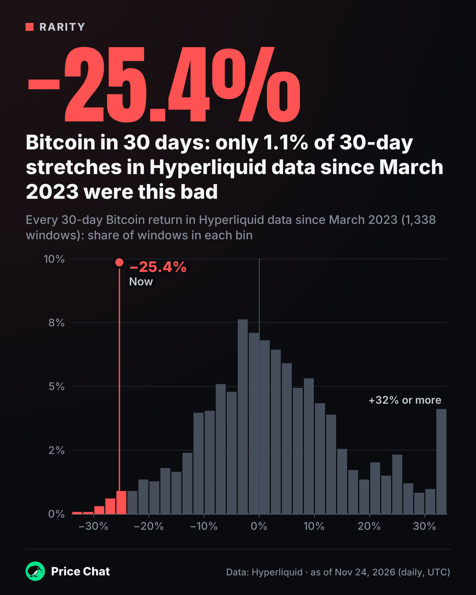
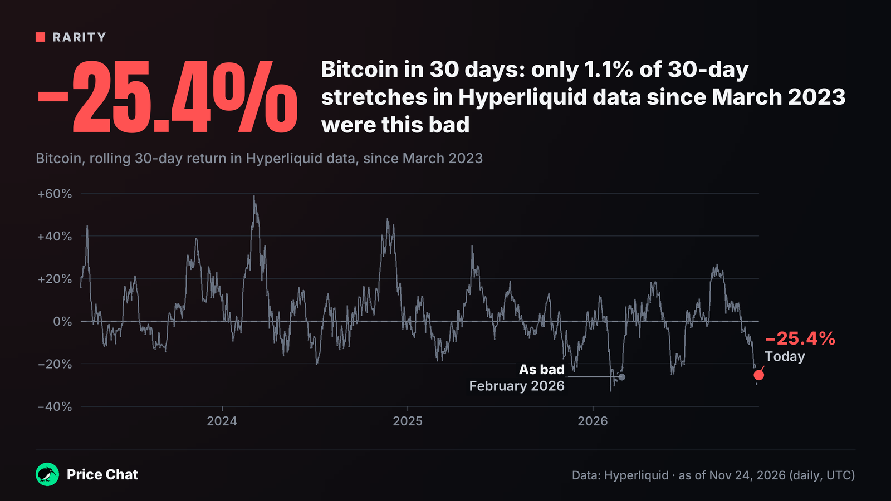
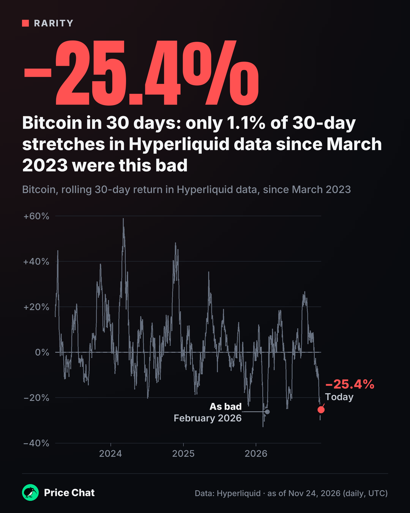

01
Bitcoin −25.4% in 30 day(s): most extreme 1.1% of Hyperliquid data since 2023-03-28
format: extremes · detector: rarity · chart: histogram_marker · score 94.4

Other chart: rolling_line


Post text
Bitcoin −25.4% in 30 days. In Hyperliquid data since March 2023, only 1.1% of all 30-day stretches were this bad (15 of 1,338). The last one ended in February 2026.
164 / 280 characters · writer: template · gate: pass
Sources: Hyperliquid (Data: Hyperliquid)
Calculation
- 30d return = 59,795.00 / 80,108.00 − 1 = −25.4%
- 15 of 1,338 30-day windows since 2023-03-28 were ≤ −25.4% (1.1%)
- most recent earlier window: ended 2026-02-27 (−26.3%). Source series px:BTC:close.